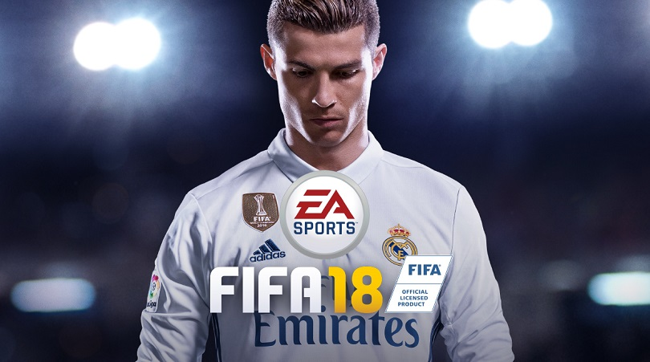
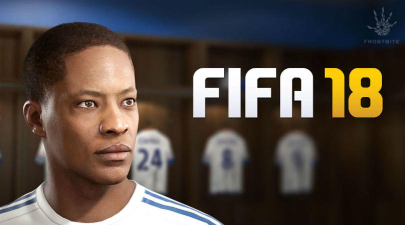
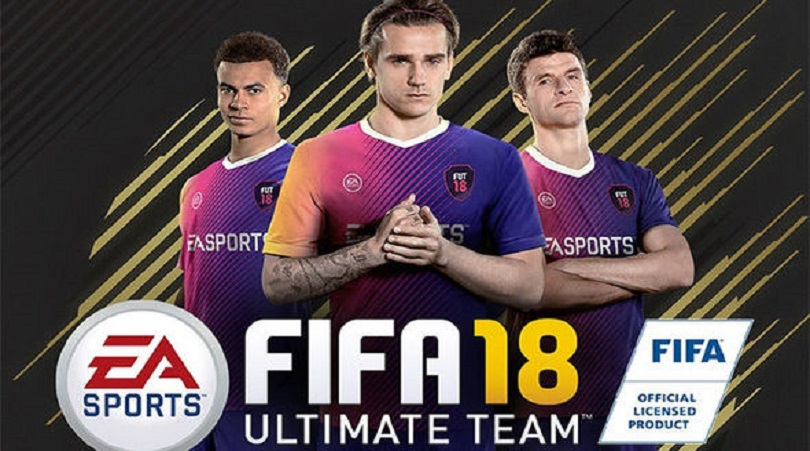

FIFA 18 þüphesiz içinde bulunduðumuz 2017 yýlýnýn en merak edilen oyunlarýndan biri. Bu merakýn temelini ise doðal olarak FIFA 17 ile yenilenen grafik motoru oluþturuyor. DICE tarafýndan üretilen Frostbite Engine’e geçen seri, bu yýl zincirlerini koparmayý amaçlýyor.
Hunter modu çok çarpýcý bir tanýtým videosu ile oyuncularý fazlasýyla heyecanlandýrdý. Ýlk olarak yabancý medyacýlarýn Alex Hunter’ýn oyun performansýný konuþtuðu daha sonra hangi takýma transfer olacaðý hakkýnda yorumlar yaptýðý , daha sonra Thomas Müller, Pep Guardiola, Dele Alli, Kevin De Bruyne, Antoine Griezmann, Cristiano Ronaldo, Marcus Rashford , Jesse Lingard, Paul Pogba, César Azpilicueta, Leonardo Bonucci, Thierry Henry gibi alanýnda isim yapmýþ yayýncýlar dünya yýldýzý futbolcular teknik direktörler görüyoruz. Ve en sonda hikayemizin kahramaný Alex Hunter üzerinde Chelsea formasý ile yeni bir teklifi düþünürken görüyoruz. Sadece Yolculuk oyun modu için yaptýklarý kaliteli reklamdan FÝFA 2018' e ne kadar önem verdiklerini ve de bizi çok heyecanlý bir yýl beklediðini gösterir. Bitti mi hayýr ikinci bir tanýtým videosu da var.
Bu tanýtýmda ise ilk olarak Ronaldo’nun gerçek oyun hareketi teknolojisi yapýlan testi görmekteyiz. Oyunun daha da kusursuz oynanabilmesini saðlamaya çalýþan EA Sports elastik hareketler ve oyun oynarken oyun içinde yaþamayý amaçlamýþtýr. Video içinde gördüðümüz hareketler bize daha da gerçekçi gelmekte. Videoya biraz daha dikkatli bakarsak formalarýn dalgalanýþý çimlerin e gölgelerin hareketleri daha da özgünleþmiþ. Dikkatimizi çeken diðer bir durum ise yeni gol sevinçleri oldu. Ama bize FÝFA 2018’in heyecanýný yaþatan ilk video can alýcýydý.
Efsane oyuncunun ilk defa bir FÝFA serisinde oyun kapaðýnda olmasý Ronaldoyu sevenleri ayrý bir heyecanlandýrdý. Özellikle bu yýl göstermiþ olduðu performans ve oyun kapaðýnda olmasý bu senede oyunun en yüksek overalli oyuncusu olacaðýna kanýt olabilir.

Bu modun temelleri, oyuncu kartlarý toplayarak takýmýnýzý kurmanýza dayanýyor. Bu kartlarý görevleri tamamlayarak veya sizden istenenleri yaparak elde edebiliyorsunuz. Tabii ki bunlarýn yaný sýra kartlarý gerçek para ile satýn alma þansýnýz da bulunuyor. Oyun içinde emek harcamadan, kýsa sürede oyuncularý elde etmek istiyorsanýz bu yolu tercih edebilirsiniz.
Takýmýnýzý kurduktan sonra çevrimiçi olarak diðer oyuncular ile rekabet edebilirsiniz. Bu sayede yeni kartlar elde edebilir ve takýmýnýzý geliþtirebilirsiniz. Zaten bu modun bu kadar tercih edilmesinin nedeni, sürekli bir döngü halinde olmasý. Takýmýnýz ile birlikte yalnýzca çevrimiçi olarak mücadele etmeniz de gerekmiyor.
Oyun, size puanýnýzý artýrabilmeniz ve yeni baþarýmlar elde edebilmeniz için görevler sunuyor. Bunlarý tamamlayarak para birimi olan “FIFA Coins” elde edebiliyorsunuz. Oynamaya baþladýktan sonra ne gibi fýrsatlara sahip olduðunuzu daha iyi anlayacaksýnýz.